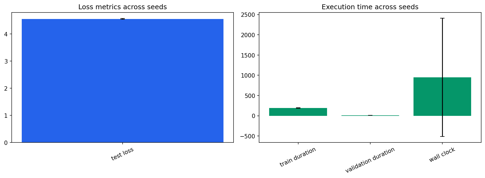

Seeds: [1, 7, 21, 42, 87]. Values are population mean +/- standard deviation.
| Test Loss | 4.55001 +/- 0.0112 |
|---|---|
| Test Perplexity | 94.6392 +/- 1.06 |
| Test Token Accuracy | 0.146067 +/- 0.00162 |
| Train Duration Seconds | 192.923 +/- 4.39 |
| Validation Duration Seconds | 10.1899 +/- 0.796 |
| Wall Clock Seconds | 946.723 +/- 1.46e+03 |
| Processed Tokens | 1.04858e+06 +/- 0 |
